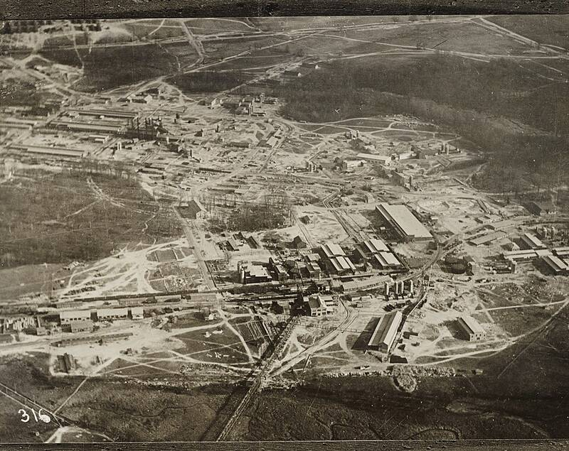

Aberdeen Proving Ground
Maryland

Army research, development, and test center. 1
Open in the interactive Watcher
Sources
- Aberdeen Proving Ground Wikipedia
Maryland

Army research, development, and test center. 1
Open in the interactive Watcher